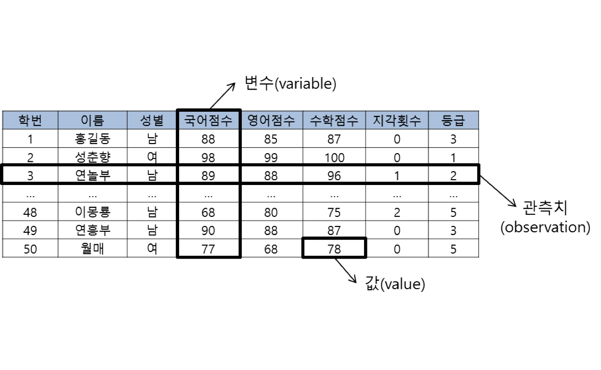
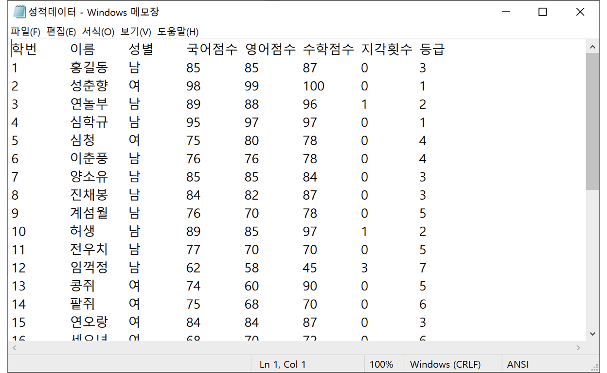

이 튜토리얼은 데이터의 구조를 이해하고, 외부 데이터 파일을 R로 가져오는 방법을 배우는 것을 도와줍니다. 다음의 방법을 배우게 됩니다.:
이 튜토리얼은 인사이트에서 출판한 초보자를 위한 R 데이터 분석(유충현 저, 2021, ISBN-1234567890)에서 발췌/편집되었습니다. 이 책은 http://ebook.insightbook.co.kr 및 오라인/오프라인 서점에서 구입하실 수 있습니다.
데이터는 다음과 같이 정의할 수 있습니다.
데이터는 질적(qualitative) 또는 양적(quantitative) 변수(variables) 값(values)의 집합(set)입니다.
다음은 가상의 성적 데이터입니다. 모든 데이터가 이와 같은 구조를 갖지는 않지만, 데이터 분석을 위한 대부분 데이터는 이와 같은 구조를 가집니다.

변수는 값의 유형(types)에 따라 양적 변수(quanitive variable, 정량적 자료)와 질적 변수(qualitative variable, 정성적 자료)로 구분합니다.
다음 그림의 기말고사 성적 데이터가 ’성적데이터.txt’라는 텍스트 파일로 ’data’라는 디렉터리에 보관되어 있습니다.

이 성적 데이터 파일을 read.table() 함수로 읽어서 scores라는 이름의 데이터 프레임을 만들어 보세요.
예제 콘솔에는 완성되지 않은 read.table() 함수의 세 인수가 있습니다. 이를 채워 완성하세요.
read.table() 함수에 알려줘야 합니다.# file, header, fileEncoding 세 인수값을 완성해 보세요.
scores <- read.table(file, header, fileEncoding)
scoresscores <- read.table(file = "data/성적데이터.txt", header = TRUE, fileEncoding = "cp949")
scoresscores 데이터 프레임을 사용하여, 성별로 국어점수 분포의 차이를 비교해 보세요. ggplot2 패키지의 geom_density() 함수를 사용는 콘솔의 스크립트를 완성세요.
국어점수입니다.성별입니다.library(ggplot2)
ggplot(data = ___, aes(x = ___, fill = 성별)) +
geom_density(alpha = 0.5, colour = "black") +
ggtitle("성별 성적 히스토그램", sub = "양적변수 : 국어점수") +
theme(text = element_text(family = "NanumGothic"))library(ggplot2)
ggplot(data = scores, aes(x = 국어점수, fill = 성별)) +
geom_density(alpha = 0.5, colour = "black") +
ggtitle("성별 성적 히스토그램", sub = "양적변수 : 국어점수") +
theme(text = element_text(family = "NanumGothic"))